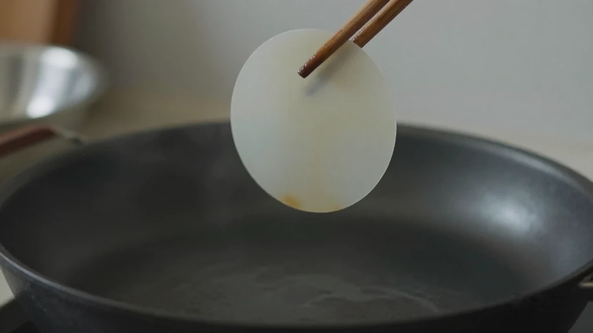
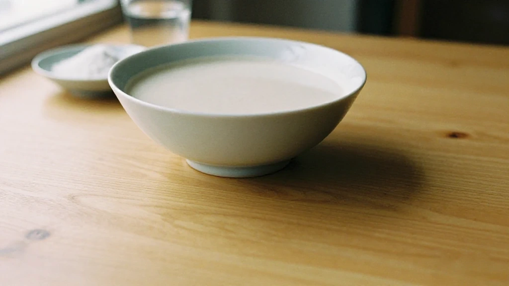
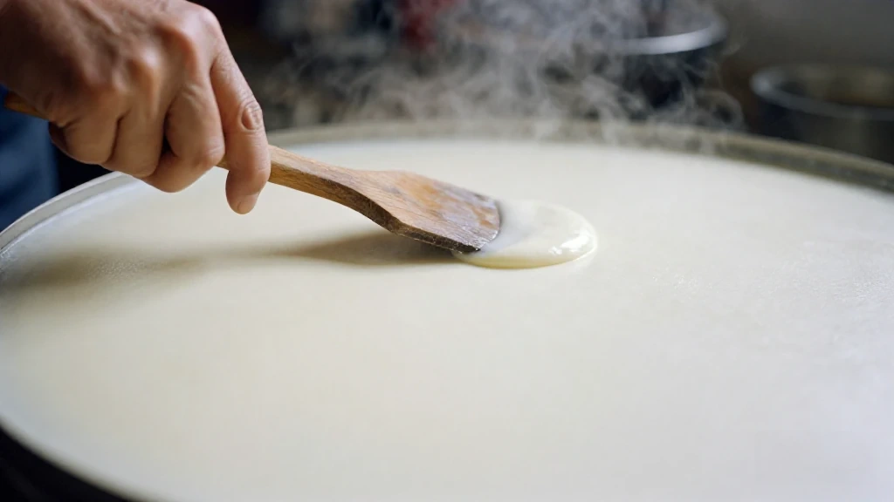
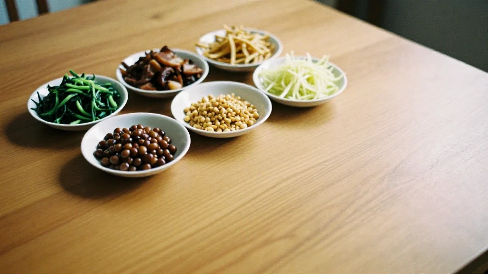
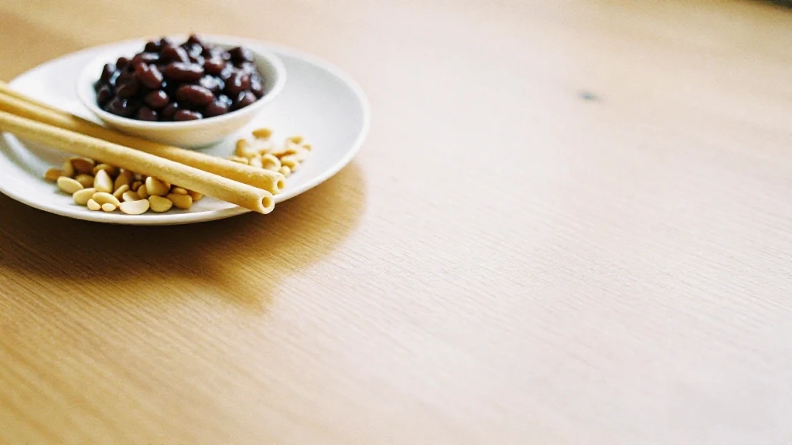
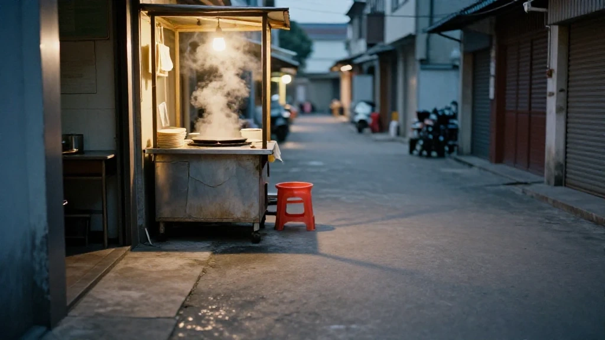
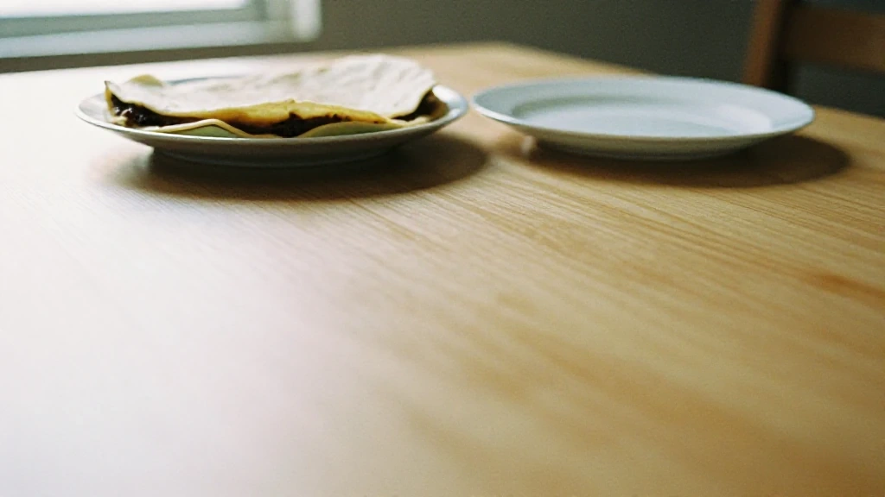

圖片由 AI輔助創作（Z-Image-Turbo）Image by AI (Z-Image-Turbo)
【鄭哥點評】
海陸豐薄餅，講嘅係海豐、陸豐一帶嘅做法。呢塊餅，重點唔係餡，係皮——薄到透光，捲得起菜，又捲得起糖。海豐屬於汕尾市；不過呢篇寫嘅地方，我就照叫海豐。
粉、水、一滴油

圖片由 AI輔助創作（Z-Image-Turbo）Image by AI (Z-Image-Turbo)
薄餅嘅皮，唔係麵粉擀出嚟嘅。番薯粉加米粉，加水開成漿，再落少少油。兩樣粉一齊開，漿軟身，但唔會一推就散。
比例我唔寫。問十個人有十個答案，同一個人今日同明日都可以唔同——番薯粉靚啲，水就落少啲。你只要記住一樣：漿要滑，唔可以有粉粒。有粉粒，推薄嗰陣就係由嗰粒粉開始裂。
落油唔係為咗惹味，係為咗滑。漿滑啲，落鍋冇咁黐，揭起嗰陣就唔會連底都扯爛。
手一轉，薄皮就貼上熱鍋

圖片由 AI輔助創作（Z-Image-Turbo）Image by AI (Z-Image-Turbo)
鍋要平，火要猛。漿落鍋之後，唔係用鏟推——係用手。手抓住漿，趁佢仲流得動，喺鍋面上一圈一圈咁拖開，拖到薄如紙。
呢個動作冇得慢。慢一秒，漿定咗型，就薄唔到；心急手快，又會扯穿。所以做薄餅嘅人，多數一路做一路同人講嘢，隻手冇停過——唔係唔專心，係唔可以停。
我喺二馬路見過做薄餅嘅人做呢一步。佢哋唔會用尺去量，係用手指同手掌去感覺：厚少少，加一拖；薄到透，就收手。一塊皮得唔得，唔使食都知——拎起一角，對住光，睇得見對面，仲要成塊都拎得起，唔穿、唔爛。
鹹嘅一邊：炒過嘅菜、鹹過嘅肉

圖片由 AI輔助創作（Z-Image-Turbo）Image by AI (Z-Image-Turbo)
鹹餡嘅主角係菜，而且一定要炒過。炒到收水、香氣出嚟，切細，再配醃過嘅豬肉——鄉下叫鹹豬肉，有啲人家用臘肉。兩樣都係重味嘅嘢，捲入一塊本身冇乜味嘅餅皮度，味道先夠。
一檯擺開，係幾隻細碗：菜一碗、肉一碗，仲有其他配菜。食嗰個人自己揀，鍾意邊樣多啲就多啲。
炒得乾身好重要。餡帶水，餅皮好快就軟塌，一捲就爛——所以寧願炒乾少少，都唔好貪濕。
甜嘅一邊：糖蔥同豆

圖片由 AI輔助創作（Z-Image-Turbo）Image by AI (Z-Image-Turbo)
甜餡係另一套邏輯。糖蔥，糖拉成空心嘅一條條，脆、甜，一咬就碎；再加豆——有啲係甜豆蓉，有啲係炒香壓碎嘅豆，粉粉哋。
甜嘅最怕濕。糖一受潮就黐埋一舊，豆蓉太濕就穿皮。所以甜薄餅要即捲即食，擺耐咗，皮軟、糖溶，就唔係嗰回事。
鹹甜之爭，喺海陸豐冇答案。同一檔，兩樣都有；有人一卷鹹一卷甜，食完鹹嘅，用甜嘅收尾。
由清明嘅供品，到二馬路嘅一捲

圖片由 AI輔助創作（Z-Image-Turbo）Image by AI (Z-Image-Turbo)
薄餅最早唔係小食。清明拜山，一疊薄餅擺上檯，捲菜、捲糖，拜完先至食。呢個講法，我聽老一輩講過好多次。
細節就個個講法都唔同。有人話清明前四日就要開始備料；又有一個講法，話以前係趁月光夜烤。呢啲我唔敢講死，唔敢當係史實——聽過就算。但有一樣係肯定嘅：嗰個年代，薄餅係節氣嘅嘢，一年得一次，所以隆重。
後來薄餅走出咗節氣。街邊有檔，海豐二馬路一帶最多。地址我唔寫門牌——門牌會變，檔口會搬；你行到人多嗰段，見邊檔有人排，跟住排就係。放學、收工前後最旺，一捲一捲咁捲，鹹甜都有。
由供品到街邊小食，中間冇一個確切嘅年份。我只知道兩樣都仲喺度：拜山嗰日仲有人捲，平日放學都仲有人排。
一句到尾

圖片由 AI輔助創作（Z-Image-Turbo）Image by AI (Z-Image-Turbo)
薄餅最特別嘅地方，係佢冇變過。同一塊餅皮，拜山嗰日係供品，平日放學係一捲小食；同一雙手，同一個鍋，同一種薄。
儀式同日常，好多時係兩樣嘢——一係隆重到唔敢碰，一係平價到冇人記得。薄餅剛剛好卡喺中間：佢夠薄，薄到可以透光；又夠韌，韌到包得住兩邊。
所以我鍾意呢塊餅。唔係因為佢好食到不得了，係因為佢老實——粉、水、一滴油，加一雙手。冇花巧，冇捷徑；你想薄，就要快；你想唔破，就要穩。
圖片由 AI輔助創作（Z-Image-Turbo）Image by AI (Z-Image-Turbo)
[Zheng Ge's Take]
Hailufeng thin pancake means the way it is made in Haifeng and Lufeng. With this one the point is not the filling, it is the skin: thin enough to see through, and it will hold vegetables, and it will hold sugar too. Haifeng belongs to Shanwei; but the place this piece is about, I will keep calling Haifeng.
Starch, Water, a Drop of Oil
圖片由 AI輔助創作（Z-Image-Turbo）Image by AI (Z-Image-Turbo)
The skin is not a wheat-flour dough rolled out thin. Sweet-potato starch and rice flour, water to make a batter, and a little oil. The two starches together give a batter that is soft but will not fall apart the moment you push it.
I am not going to give you a ratio. Ask ten people and you get ten answers, and the same person will give you a different one tomorrow — better starch today, less water. Remember one thing only: the batter has to be smooth, with no lumps. A lump is where the sheet starts to tear.
The oil is not there for flavour. It is there for slip. A slippery batter does not stick to the pan, and when you lift the sheet it does not take the bottom of it with you.
One Turn of the Hand, and the Skin Is on the Pan
圖片由 AI輔助創作（Z-Image-Turbo）Image by AI (Z-Image-Turbo)
The pan has to be flat and the heat has to be high. Once the batter is down it is not a spatula that spreads it — it is a hand. The hand takes the batter while it is still moving and drags it round the pan, circle after circle, until it is as thin as paper.
There is no slowing this down. A second late and the batter has set and will not go thin; rush it and you tear it. Which is why the people who make these pancakes talk while they work and never stop their hand — not because they are not paying attention, but because they cannot stop.
I have watched people on Erma Road do this step. They do not measure with a ruler; they feel it with fingers and palm. A little thick, one more drag; thin enough to see through, stop. You know whether a sheet is any good before you eat it — lift one corner, hold it to the light, see through it, and still be able to hold the whole sheet up without a hole or a tear.
The Savoury Side: Fried Greens, Salted Pork
圖片由 AI輔助創作（Z-Image-Turbo）Image by AI (Z-Image-Turbo)
The savoury side is built on vegetables, and they must be fried first. Fried until the water is gone and the smell comes up, cut fine, then paired with cured pork — salted pork in the villages, and some households use cured bacon. Both are strongly flavoured things, and they go into a skin that has almost no flavour of its own. That is the whole idea.
Set out on a table it is a row of small bowls: one of greens, one of meat, and a few others besides. You help yourself, more of what you like.
Dryness matters. A wet filling softens the skin in no time and the roll falls apart — so fry it a little drier rather than a little wetter.
The Sweet Side: Sugar Sticks and Beans
圖片由 AI輔助創作（Z-Image-Turbo）Image by AI (Z-Image-Turbo)
The sweet side works on a different logic. Sugar sticks — sugar pulled into hollow lengths — crisp, sweet, breaking at the first bite. Then beans: sometimes a sweet bean paste, sometimes beans fried and crushed to a powder.
Sweet things are frightened of damp. Sugar takes on moisture and clumps into one lump; bean paste that is too wet goes through the skin. Which is why a sweet one is rolled and eaten on the spot. Leave it sitting and the skin softens, the sugar runs, and it is no longer the thing it was.
Savoury or sweet, Hailufeng has no answer. The same stall has both. Some people roll one savoury and one sweet, and finish the savoury with the sweet.
From a Qingming Offering to a Roll on Erma Road
圖片由 AI輔助創作（Z-Image-Turbo）Image by AI (Z-Image-Turbo)
The thin pancake was not a snack to begin with. At Qingming, when the family goes up the hill, a stack of them goes on the table, rolled with greens, rolled with sugar, and eaten once the offerings are done. I have heard the older generation tell it this way many times.
The details differ from teller to teller. Some say the preparation started four days before Qingming. There is also a version that says they were baked by moonlight. I will not put those down as fact — that is the telling, and I have heard it, no more. What is certain is this: back then the pancake belonged to the solar terms, once a year, and that is why it was treated with ceremony.
Later it walked out of the calendar. There are stalls now, most of them around Erma Road in Haifeng. I am not going to give you a house number — numbers change and stalls move. Walk until the crowd thickens, and queue where the queue is. It is busiest after school and around the end of the working day: one rolled after another, savoury and sweet.
Between the offering and the street snack there is no year I can point to. I only know that both are still here: on the hill day someone still rolls them, and after school someone still queues.
In One Line
圖片由 AI輔助創作（Z-Image-Turbo）Image by AI (Z-Image-Turbo)
The strange thing about this pancake is that it never changed. The same skin is an offering on the hill day and a rolled snack after school; the same two hands, the same pan, the same thinness.
Ritual and ordinary life are usually two separate things — either so solemn you do not dare touch it, or so cheap nobody remembers it. This one sits exactly in between. Thin enough to see through, and tough enough to hold both sides.
Which is why I like it. Not because it is the best thing I have ever eaten, but because it is honest: starch, water, a drop of oil, and a pair of hands. No tricks, no shortcut. If you want it thin, you have to be quick. If you want it whole, you have to be steady.